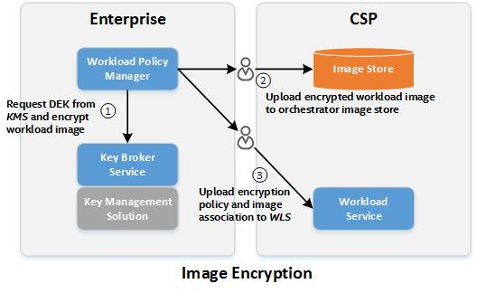

Workload Confidentiality
Workload Confidentiality builds upon Platform Attestation to protect data in container images. At its core, this feature is about allowing an image owner to set policies that define the conditions under which their image will be allowed to run; if the policy conditions are met, the decryption key will be provided, and if the conditions are not met, the image will remain encrypted and inaccessible. This provides a level of enforcement beyond integration with orchestrators, and protects sensitive data when the image is at rest.
Workload Encryption relies on Platform Attestation to define the security attributes of hosts. When a protected image is launched, the Workload Agent on the host launching the container image will detect the attempt (using a function of the CRI-O container runtime) and use the Image ID to find the Image Flavor on the Workload Service. The Workload Service will retrieve the current trust report for the host launching the image, and use that report to make a key retrieval request to the key transfer URL retrieved from the image flavor. The key transfer URL refers to the URL to the image owner’s Key Broker Service, along with the ID of the key needed.
In a typical production deployment, a Cloud Service Provider would enable Intel® SecL-DC security controls by installing the Intel® SecL-DC applications (with the exception of the Key Broker and Workload Policy Manager), and configuring each workload host to be Trusted (as per the Platform Integrity Attestation use case).
The owner of the workload image(s) to be protected (for example, the end customer of the CSP) must install a Key Broker Service (which must be available for network communication from the Workload Service hosted on the CSP), the Workload Policy Manager, and their own Authentication and Authorization Service and Certificate Management Service (these will manage authentication and certificates for the KBS and WPM).
Any number of image owner customers with their own unique KBS/WPM/AAS/CMS deployments may protect images that can be run by a single CSP deployment.
The image owner will use the WPM to encrypt any image(s) to be protected; the WPM will automatically create a new image encryption key using the KBS, and will output the encrypted image and an Image Flavor. The image owner can then upload the encrypted image to the CSP’s image storage service, and then upload the Image Flavor to the CSP-hosted WLS.
When a compute host at the CSP attempts to launch a protected image, the WLA on the host will detect the launch request, and will issue a key transfer request to the WLS. The WLS will use the image ID to retrieve the Image Flavor, which contains the key retrieval URL for that image. This URL is hosted on the KBS of the image owner (which is why the KBS must be available to network requests from the WLS). The WLS will access the HVS to retrieve the current Platform Integrity Attestation report for the host, and will use this report to make a key transfer request to the KBS at the key transfer URL.
The KBS will receive the request, verify that the Platform Integrity Attestation report is signed using a known SAML signing key (verifying that the report comes from a known and trusted HVS), and will then verify that the report shows that the host is trusted.
If these requirements are met, the KBS will use the host’s Binding Key (the public half of an asymmetric keypair generated by the host’s TPM and included in the attestation report) as a Key Encryption Key to seal the Image Encryption Key to the TPM of the host that was attested.
When the host receives the response to the key request, it will unseal the Image Encryption Key using its TPM. Because the Key Encryption Key is unique to this host’s TPM, only the actual host that was attested will be able to gain access to the image.
With the Image Encryption Key, the host’s WLA will create the appropriate encrypted volume(s) for the image and begin the launch as normal.
The WLA does not retain the key on disk; if/when the host is rebooted or the WLA is restarted, restarting the workloads based on protected images will trigger new key requests based on new Platform Integrity Attestation reports. In this way, if a host is compromised in a method detectable by the Platform Integrity feature, protected images will be unable to launch on this server.

Container Confidentiality
Container Confidentiality with Cri-o and Skopeo
Prerequisites
Container Confidentiality with Cri-o runtime requires cri-o with version >=1.21 and skopeo version >=1.3.0
-
Kubernetes must be configured to use Cri-o
-
Platform Integrity Attestation must be configured for the physical Kubernetes Worker Nodes.
-
This includes, at minimum, the CMS; AAS; HVS; KBS; WPM; and the Trust Agent must be installed on each Worker Node. See the Installation section for details installing these services.
-
Each Kubernetes Worker Node should be Trusted in the attestation reports generated by the HVS.
-
Only physical Worker Nodes are supported at this time.
-
The Workload Policy Manager must be installed and available
Note
Its recommended to not to not use a proxy to access container registries. A local registry mirror is recommended instead.
Configure Ocicrypt on all Worker Nodes
While Help will install the Workload Agent, each worker node will ned to be configured to use the WLA as a key provider in /etc/ocicrypt-wpm.json:
{
"key-providers":{
"isecl": {
"grpc": "unix:///var/run/workload-agent/wlagent.sock"
}
}
}
Workflow
Image encryption
Configure the ocicrypt config file /etc/ocicrypt-wpm.json as below on the system(s) running the WPM:
{
"key-providers": {
"isecl": {
"cmd": {
"path":"/usr/bin/wpm",
"args": ["get-ocicrypt-wrappedkey"]
}
}
}
}
Add the variable OCICRYPT_KEYPROVIDER_CONFIG=/etc/ocicrypt-wlagent.json in /etc/sysconfig/crio
Restart CRI-O
systemctl daemon-reload
systemctl restart crio
Encrypting the Image with Skopeo
$OCICRYPT_KEYPROVIDER_CONFIG=/etc/ocicrypt-wpm.json skopeo copy --encryption-key provider:isecl:any source-image destination-image
Alternatively, encrypt the image and push it to a registry in a single step:
$ OCICRYPT_KEYPROVIDER_CONFIG=/etc/ocicrypt-wpm.json skopeo copy --encryption-key provider:isecl:any oci:custom-image:latest docker://registry.server.com:5000/custom-image:enc
Examples
Copy a container image from a registry to a local server:
$ skopeo copy docker://docker.io/library/nginx:latest oci:nginx_local
To encrypt an image (this will allow the image to run only on Trusted platforms):
$ OCICRYPT_KEYPROVIDER_CONFIG=/etc/ocicrypt-wpm.json skopeo copy --encryption-key provider:isecl:any oci:nginx_local oci:nginx_secl_enc
To copy a local image to a remote registry:
$ skopeo copy oci:nginx_secl_enc docker://registry.server.com:5000/nginx_secl_enc:latest
Prepare an Image
Convert the image to an OCI image using Skopeo:
$ skopeo copy docker-daemon:custom-image:latest oci:custom-image:latest
Encrypt the image
$ OCICRYPT_KEYPROVIDER_CONFIG=/etc/ocicrypt-wpm.json skopeo copy --encryption-key provider:isecl:any oci:custom-image:latest oci:custom-image:enc
Push the image to a registry:
$ skopeo copy oci:custom-image:enc docker://Registry.server.com:5000/custom-image:enc
Pulling and Encrypting a Container Image
Skopeo can be used to pull a container image from an external registry (a private Docker registry is used in the examples above). This image may be encrypted already, but if you wish to pull an image for encryption, it must be in plaintext format. Skopeo has a wrapper that can interact with the Workload Policy Manager. When trying to encrypt an image, Skopeo calls the WPM CLI fetch-key command. In the command, the KBS is called in order to create a new key. The return from the KBS includes the key retrieval URL, which is used when trying to decrypt. After the key is returned to the WPM, the WPM passes the key back to Skopeo. Skopeo uses the key to encrypt the image layer by layer as well as associate the encrypted image with the key's URL. Skopeo then uploads the encrypted image to a remote container registry.
Importing Verification Service Certificates
After installing the Key Broker, the Key Broker must import the SAML and PrivacyCA certificates from any Verification Service(s) it will trust. This provides the Key Broker a way to ensure that only attestations that come from a “known” Verification Service. The SAML and PrivacyCA certificates needed can be found on the Verification Service.
Importing a SAML certificate
Retrieve the HVS SAML certificate:
GET https://<HVS IP or hostname>:<HVS port>/hvs/v2/ca-certificates?domain=saml
accept: application/x-pem-file
Use the SAML certificate output in the following POST call to the Key Broker:
POST https://<Key Broker IP address or hostname>:<KBS port>/kbs/v1/saml-certificates
Content-Type: application/x-pem-file
-----BEGIN CERTIFICATE-----
MIID9TCCAl2gAwIBAgIBCTANBgkqhkiG9w0BAQwFADBQMQswCQYDVQQGEwJVUzEL
MAkGA1UECBMCU0YxCzAJBgNVBAcTAlNDMQ4wDAYDVQQKEwVJTlRFTDEXMBUGA1UE
AxMOQ01TIFNpZ25pbmcgQ0EwHhcNMTkxMjExMTkzOTU1WhcNMjAxMjExMTkzOTU1
WjAYMRYwFAYDVQQDEw1tdHdpbHNvbi1zYW1sMIIBojANBgkqhkiG9w0BAQEFAAOC
AY8AMIIBigKCAYEArbrDpzR4Ry0MVhSJULHZoiVL020YqtyRH+R2NlVXTpJzqmEA
Ep2utfcP8+mSCT7DLpGBO6KACPCz3pmqj3wZyqZNTrG7IF2Z4Fuf641fPcxA3WVH
3lXz0L5Ep4jOUdfT8kj4hHxHJVJhDsW4J2fds2RGnn8bZG/QbmmGNRfqdxht0zMh
63ik8jBWNWHxYSRbck27FyTj9hDU+z+rFfIdNv1SiQ9FyndgOytK/m7ijoAetkSF
bCsauzUL7DFdRzTmB2GCF/Zd957V51GNpvan6uwqDTL6T4NFX2sqoVduu/WIyTpO
/6D2aA741CR3Bmk9945TSeDKZNz2HkihuE+d8ES68W1t4rvox/Noi74e0k35AqcQ
Q3P0DZpD+XaRapz5CHcOPwOpZ3A/8wN2f+CS2HqDx8FwABkh7l8OdiIWs8+TDQZe
1x4e/50jE/8zMR/tsAy1EXkm3OTOVxih0u18J84x4OT+rHAIcoQ+TOJ40aHrWGHg
kVCfiCUzYYT/W/RBAgMBAAGjEjAQMA4GA1UdDwEB/wQEAwIGwDANBgkqhkiG9w0B
AQwFAAOCAYEAP/ABHdPquBNrMOCU+v7SfMLmIfJymA15mCorMEiKZ1d7oNnoPP0G
pfyRA4TUiyFLCOLi4jIXWuu4Lt6RUz6bnzn8JRWD5ocIJGGxWjOA66xyS3o9iG7G
otOh1pzp5wlwPG7r8ZJ7Q26J+NuHpN1GW5U5Vjww1J9rEKnsKp45QHkG2nXEujdx
YXmKXtEG2gOMVjaLiqromf6VxbdNoKHZGEfqU3H5ymMgqIrnXl3MivA30CymCDLl
rJGRQSwOfzywPCnUOAVptBwLs2kwOtdvnq+BTK3q/dKKoNiFURj/mQ70egquW9ly
TOkYivmKqMZxZlq0//cre4K35aCW3ZArzGgNM8Pk0V/hZp8ZHrWLNAdo4w/Pj1oC
Yq7R0RQ8jQerkewYBfrv3O3e9c22h48fsHnun6F3sbcDjws/sWJIOcrPyqJE26HY
DmIKpvjqc0jI31ndBBwkb+RIBFkz1Ycob9rsW16uVqbjBFDjJ5QKOdXxhqulyboa
JAF53vmU+1jE
-----END CERTIFICATE-----
Importing a PrivacyCA Certificate
Use OpenSSL to display the PrivacyCA certificate content:
GET https://<HVS IP or hostname>:<KVS port>/hvs/v2/ca-certificates?domain=root
accept: application/x-pem-file
Use the PrivacyCA certificate output in the following POST call to the Key Broker:
POST https://<Key Broker IP address or hostname>:9443/kbs/v1/tpm-identity-certificates
Content-Type: application/x-pem-file
-----BEGIN CERTIFICATE-----
MIIHaDCCBdCgAwIBAgIGAW72eWZ9MA0GCSqGSIb3DQEBCwUAMBsxGTAXBgNVBAMT
EG10d2lsc29uLXBjYS1haWswHhcNMTkxMjExMTkzOTQxWhcNMjkxMjEwMTkzOTQx
WjAbMRkwFwYDVQQDExBtdHdpbHNvbi1wY2EtYWlrMIIBojANBgkqhkiG9w0BAQEF
AAOCAY8AMIIBigKCAYEAmWqBr2YiycZbF/QgFbxTr4YiHtueWBdW0sibtH1QRSbI
KtkbFsmr6J6QiLBaXcF7KVN6DaD0j5sU4cZSttqKwlSUnn07xjWJRP1EcvSaufO1
MarewgBpFQcI2T6aTs1ziV77BoKz0kWteURz1jT1KSwuattxTelpmgucDp98MqW/
uWsliHUVxh51JTE1yn7Vf1QCWz3a+NDH98Lgr5ks337yx3VBK59Dwtsmfsrd5tMn
IuV9Jw0Y2UEdDi004FXI4q64MsMpWA7t5ONRAU+VNU0Y3saXeNBDg9J363imOHIH
haP8ixDhqZ+Xb/TGafgFeEHBkJTv6bWpDqodbWVDbgZloxJzcNgtimQw3RbyrB3C
KijlEo5BQY6bOcdMG7gCq77u/fbOvLb5IXzS8ZDpwuwCQNnBP4UJXwAflO7COG7P
mpj9bTV1OtFiPtYFc4JdGdaf1Pl2zWGeR0c3PIzYQxqvtTVtFX+oRWRsgaEdxKf7
LJx4aIjXwP2s6PIiOSalAgMBAAGjggOwMIIDrDCCAbMGA1UdDgSCAaoEggGmMIIB
ojANBgkqhkiG9w0BAQEFAAOCAY8AMIIBigKCAYEAmWqBr2YiycZbF/QgFbxTr4Yi
HtueWBdW0sibtH1QRSbIKtkbFsmr6J6QiLBaXcF7KVN6DaD0j5sU4cZSttqKwlSU
nn07xjWJRP1EcvSaufO1MarewgBpFQcI2T6aTs1ziV77BoKz0kWteURz1jT1KSwu
attxTelpmgucDp98MqW/uWsliHUVxh51JTE1yn7Vf1QCWz3a+NDH98Lgr5ks337y
x3VBK59Dwtsmfsrd5tMnIuV9Jw0Y2UEdDi004FXI4q64MsMpWA7t5ONRAU+VNU0Y
3saXeNBDg9J363imOHIHhaP8ixDhqZ+Xb/TGafgFeEHBkJTv6bWpDqodbWVDbgZl
oxJzcNgtimQw3RbyrB3CKijlEo5BQY6bOcdMG7gCq77u/fbOvLb5IXzS8ZDpwuwC
QNnBP4UJXwAflO7COG7Pmpj9bTV1OtFiPtYFc4JdGdaf1Pl2zWGeR0c3PIzYQxqv
tTVtFX+oRWRsgaEdxKf7LJx4aIjXwP2s6PIiOSalAgMBAAEwDwYDVR0TAQH/BAUw
AwEB/zCCAeAGA1UdIwSCAdcwggHTgIIBpjCCAaIwDQYJKoZIhvcNAQEBBQADggGP
ADCCAYoCggGBAJlqga9mIsnGWxf0IBW8U6+GIh7bnlgXVtLIm7R9UEUmyCrZGxbJ
q+iekIiwWl3BeylTeg2g9I+bFOHGUrbaisJUlJ59O8Y1iUT9RHL0mrnztTGq3sIA
aRUHCNk+mk7Nc4le+waCs9JFrXlEc9Y09SksLmrbcU3paZoLnA6ffDKlv7lrJYh1
FcYedSUxNcp+1X9UAls92vjQx/fC4K+ZLN9+8sd1QSufQ8LbJn7K3ebTJyLlfScN
GNlBHQ4tNOBVyOKuuDLDKVgO7eTjUQFPlTVNGN7Gl3jQQ4PSd+t4pjhyB4Wj/IsQ
4amfl2/0xmn4BXhBwZCU7+m1qQ6qHW1lQ24GZaMSc3DYLYpkMN0W8qwdwioo5RKO
QUGOmznHTBu4Aqu+7v32zry2+SF80vGQ6cLsAkDZwT+FCV8AH5Tuwjhuz5qY/W01
dTrRYj7WBXOCXRnWn9T5ds1hnkdHNzyM2EMar7U1bRV/qEVkbIGhHcSn+yyceGiI
18D9rOjyIjkmpQIDAQABoR+kHTAbMRkwFwYDVQQDExBtdHdpbHNvbi1wY2EtYWlr
ggYBbvZ5Zn0wDQYJKoZIhvcNAQELBQADggGBAC3PEB8Av0PBJgrJMxzMbuf1FCdD
AUrfYmP81Hs0/v70efviMEF2s3GAyLHD9v+1nNFCQrjcNCar18k45BlcodBEmxKA
DZoioFykRtlha6ByVvuN6wD93KQbKsXPKhUp8X67fLuOcQgfc3BoDRlw/Ha1Ib6X
fliE+rQzLCOgClK7ZdTwl9Ok0VbR7Mbal/xShIqr2WopjBtal9p4RsnIxilTHI+m
qzbV8zvZXYfYtEb3MMMT5EnjIV8O498KKOjxohD2vqaxqItd58pOi6z/q5f4pLHc
DvdsJecJEoWb2bxWQdBgthMjX6AUV/B5G/LTfaPwVbTLdEc+S6Nrobf/TFYV0pvG
OzF3ltYag0fupuYJ991s/JhVwgJhCGq7YourDGkNIWAjt0Z2FWuQKnxWvmResgkS
WTeXt+1HCFSo5WcAZWV8R9FYv7tzFxPY8aoLj82sgrOE4IwRqaA8KMbq3anF4RCk
+D8k6etqMcNHFS8Fj6GlCd80mb4Q3sxuCiBvZw==
-----END CERTIFICATE-----
Launching an Encrypted Container Image
Containers of the protected images can now be launched as normal using Kubernetes pods and deployments. Encrypted images will only be accessible on hosts with a Platform Integrity Attestation report showing the host is trusted. If the Crio Container is launched on a host that is not trusted, the launch will fail, as the decryption key will not be provided.
Pull encrypted image using command line from the each WLA node crictl pull <Registry-IP>:5000/<image-name>:<tag>